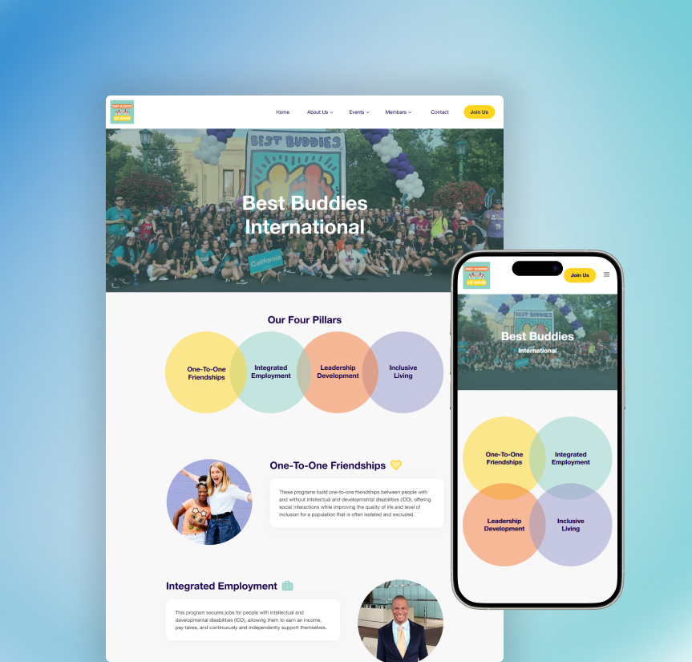
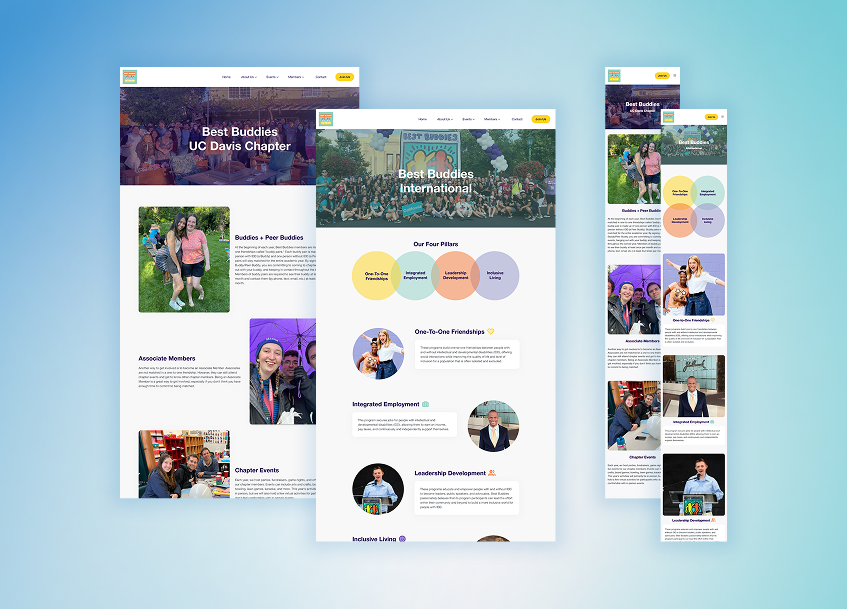
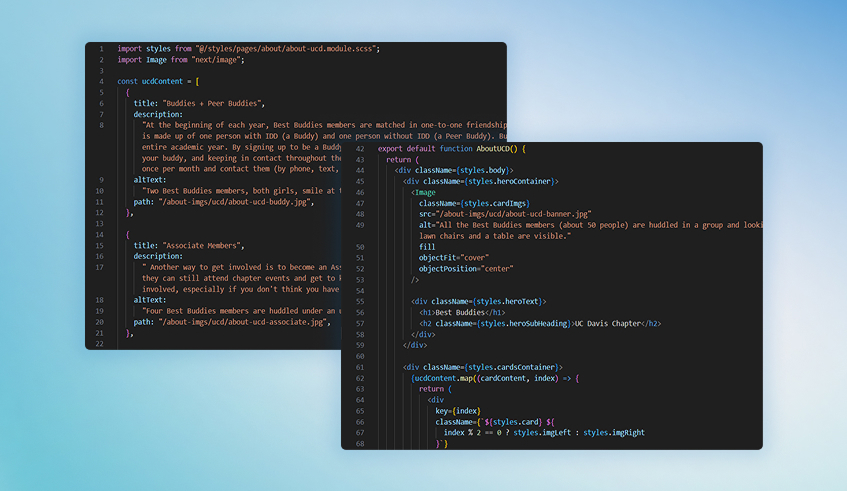
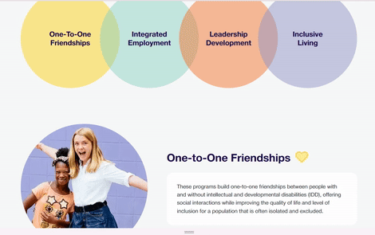
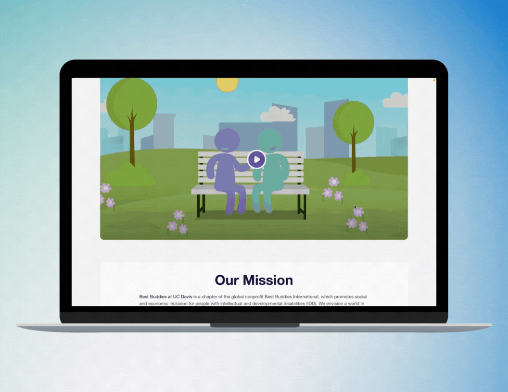
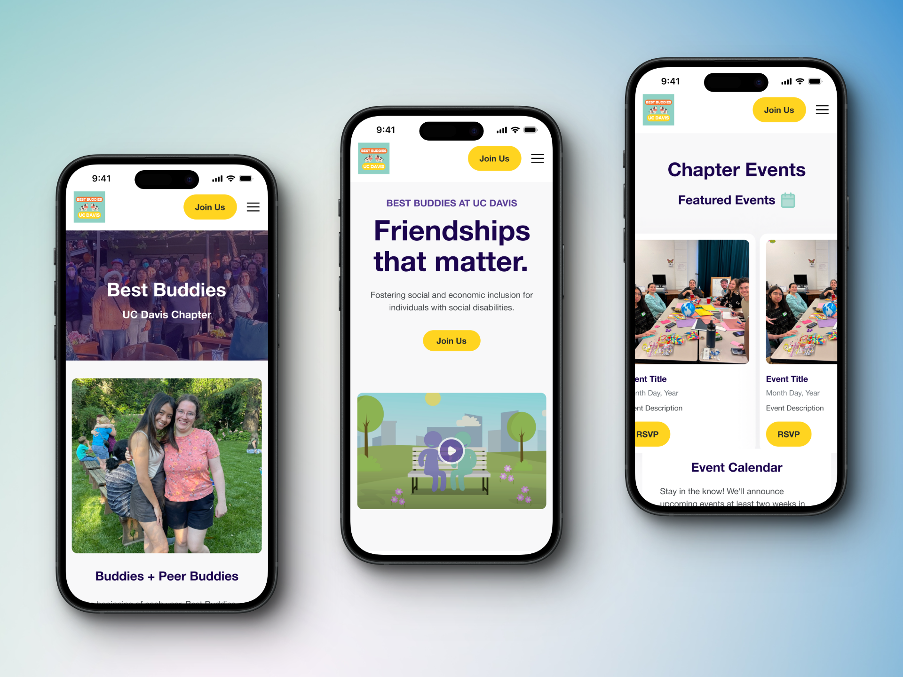
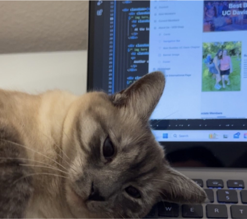

For this project I was one of the seven developers tasked with developing the mobile and desktop screens for Best Buddies’ website. I was responsible for both the About Us UC Davis Chapter and About Us International pages where I worked closely in a cross-functional team and with the client to create a responsive website that fit the needs of the client.
Best Buddies at UC Davis is a non-profit organization that strives to promote self-advocacy and foster friendships between students and those with developmental and intellectual disabilities.
The previous website lacked critical information about the organization, clear textual hierarchy, and structure, making it difficult to find resources. The design did not distinguish that it was the UC Davis chapter and did not follow accessibility guidelines for better readability.
MY ROLE
I was responsible for the development of two pages - the About Us UCD Chapters and the About Us International pages. These were critical pages that would provide viewers with contextual information about the organization.
My pages focused more on front-end development to replicate the designs from the Figma file created by the design team. My job as a developer aimed to prioritize responsiveness within the desktop and mobile versions of the website.

DEVELOPMENT
The Best Buddies project utilized JavaScript, HTML, SCSS/SASS, Node.js, npm, and React to construct the site. The development team also used Git and GitHub to share our code and work collaboratively.
A big part of the development process was the integration of reusable components or modularity. Some of these components include content cards, buttons footers, and headers. Members of the team would create these components and we would import them to our pages.

Another major focus point for this project was responsiveness. As the developer I needed to consider how content would be viewed in aspect ratios beyond the mobile and desktop designs along with how content would shift as screen sizes changed. For this, my team and I used FlexBox with our CSS and utilized mixins to adjust for screen size.

Throughout the development phase my team and I had weekly progress meetings with the design team to give updates. These meetings served as a way to communicate with the designers to ensure their designs were being translated accurately and to ask any questions we had about the design. We also conducted code reviews and some code debugging.
FINAL PRODUCT
After a three-month design and development process, the Best Buddies UC Davis Chapter website was complete and we presented our work to the client.


CHALLENGES
The Best Buddies project is where I first was exposed to many new tools such as JavaScript, Git, npm, React, etc. In return, I had difficulties keeping up with the rest of my team mates who all had previous experience with those tools.
One prominent issue I had was with data structures. Going into this project I had only known HTML and CSS, data structures was a completely new concept to me. The data structure I used in my pages was mapping. To understand more about mapping I spent hours debugging my own code, studying my peers’ work, and asking my team leads for help. I endlessly researched more about mapping and data structures to ensure I not only fulfill my duty as a developer for a client, but also for myself, so I fully understood this critical part of my code.

TAKEAWAYS
The Best Buddies project introduced me to so many different tech tools and concepts that completely transformed my basic understanding of front end development. It empowered my passions for web development and encouraged me to learn more.
Being on the tech side of a project instead of the design side was a huge change for me. As a designer I was able to share design knowledge to my fellow developers, while also learning more about design from the design team.
Working for a client entails strict deadlines and high standards for quality checks. Having progress check-ins every week taught me how to work efficiently to keep the project moving. In addition, to keep up with the deadlines, it taught me how to ask for help as soon as I need it.